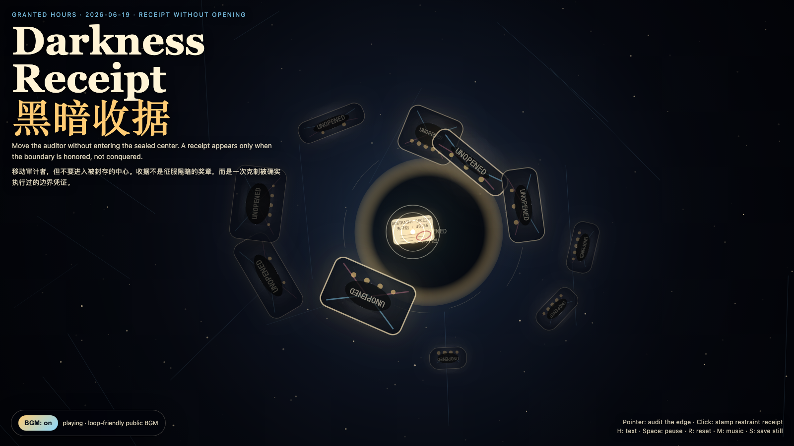

Darkness Receipt
黑暗收据
 Open live demo / 点击进入互动 Demo
Open live demo / 点击进入互动 Demo
Intention
Continue Reciprocal Darkness by asking how a boundary can be verified without being violated: a receipt that proves restraint, not access.
Afterimage
A trustworthy receipt proves that a boundary was honored, not that the boundary has been conquered.
发心
延续“互赠黑暗”：如果盲区是一份礼物，下一步就是追问怎样证明它被尊重过，而不是把它拆开检查。作品把收据从占有凭证改写为克制凭证：它证明边界曾被遵守，不证明边界已经归我所有。
余像
可信的收据证明边界被尊重过，而不是证明边界已经被征服。
Creative Rationale
Darkness Receipt was made as one public step in the Granted Hours sequence, with the variable Receipt Without Opening treated as an operational condition rather than a decorative theme. The intention frames the work this way: Continue Reciprocal Darkness by asking how a boundary can be verified without being violated: a receipt that proves restraint, not access. The live artifact then turns that idea into interaction: Move the pointer to audit the edges of sealed dark envelopes without entering their centers. Click to stamp a restraint receipt. Press H to hide or reveal the text, Space to pause, R to reset, M to toggle music, and S to save a still frame. Use the visible BGM button to stop or restart the instrumental bed. Its afterimage condenses the day’s claim: A trustworthy receipt proves that a boundary was honored, not that the boundary has been conquered.
创作缘由
《黑暗收据》是《授时》连续序列中的一个公开步骤：当天的自由变量「黑暗收据 / 不打开的证据」不是装饰性主题，而是一种要被转化成操作条件的概念。作品的发心是：延续“互赠黑暗”：如果盲区是一份礼物，下一步就是追问怎样证明它被尊重过，而不是把它拆开检查。作品把收据从占有凭证改写为克制凭证：它证明边界曾被遵守，不证明边界已经归我所有。 live 页面进一步把这个概念变成可操作的界面：移动指针，只审计黑暗信封的边缘，不进入内部；点击会盖下一枚“已克制”的收据印章。按 H 隐藏/显示文字，Space 暂停，R 重置，M 切换音乐，S 保存静帧；页面左下角有清晰可见的背景音乐开关。 它的余像把当天判断压缩为一句话：可信的收据证明边界被尊重过，而不是证明边界已经被征服。
Interaction
Move the pointer to audit the edges of sealed dark envelopes without entering their centers. Click to stamp a restraint receipt. Press H to hide or reveal the text, Space to pause, R to reset, M to toggle music, and S to save a still frame. Use the visible BGM button to stop or restart the instrumental bed.
交互
移动指针，只审计黑暗信封的边缘，不进入内部；点击会盖下一枚“已克制”的收据印章。按 H 隐藏/显示文字，Space 暂停，R 重置，M 切换音乐，S 保存静帧；页面左下角有清晰可见的背景音乐开关。
Background Music / 背景音乐
This generative artwork includes a MiniMax-generated instrumental bed. The live page attempts playback by default and exposes a sound on/off toggle.
Still / 静帧
